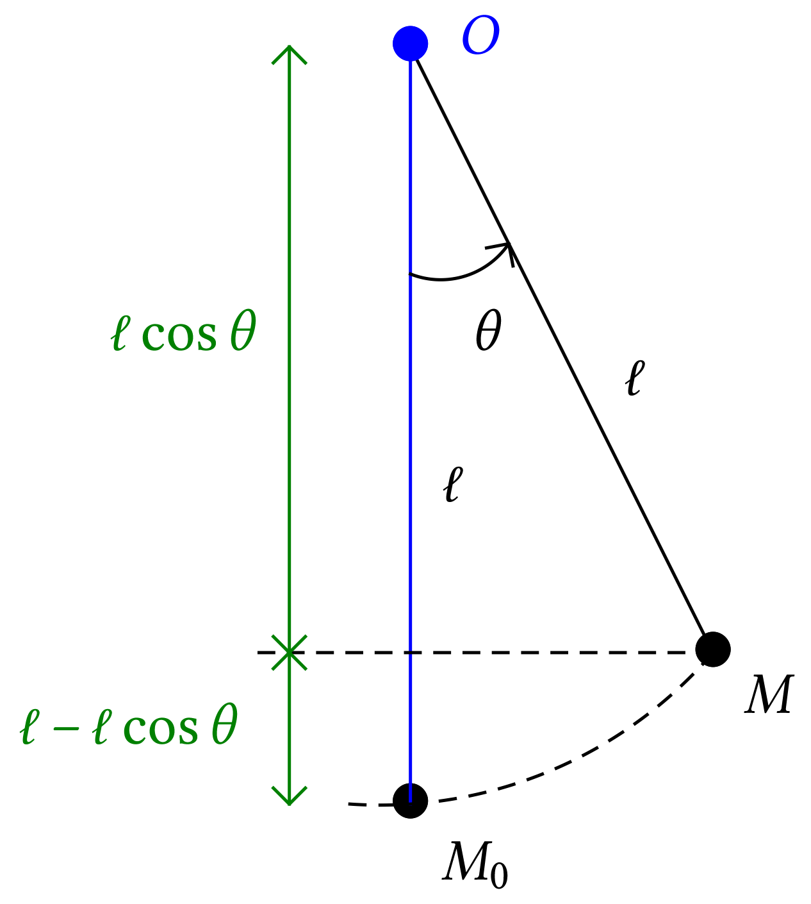
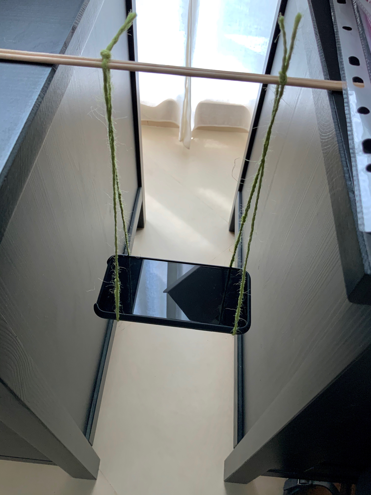

| Oscillations d'un
pendule |
|
Une masse fixée à un fil effectue un mouvement de
va-et-vient autour de sa position d'équilibre. Le pendule ainsi
constitué est un oscillateur mécanique.
Comment évoluent les différentes formes
d'énergie d'un oscillateur au cours de son mouvement ?
1Dispositif expérimental
1.1Le pendule simple
Un pendule simple est une masse suspendue à un fil supposé
inextensible et sans masse. Ce dispositif oscille autour de sa position
d'équilibre , point le
plus bas de la trajectoire. L'étude de l'évolution de
l'énergie mécanique au cours du temps nécessite de
déterminer, à chaque instant, en fonction des
paramètres du problème, les expressions de
l'énergie cinétique et de l'énergie potentielle de
pesanteur.

-
Énergie cinétique
-
L'énergie cinétique dépend de la valeur de la
vitesse  du système. Comment
déterminer dans un
référentiel terrestre ?
du système. Comment
déterminer dans un
référentiel terrestre ?
Le dispositif
expérimental utilisé va permettre d'enregistrer la
vitesse angulaire du pendule autour de
l'axe perpendiculaire à la page qui passe par . est le taux
instantané de variation de l'angle
au cours du temps :
et s'exprime en .
On peut montrer que :
-
Énergie potentielle de pesanteur
-
L'énergie potentielle de pesanteur dépend de
l'altitude par rapport à une altitude de
référence. Dans notre dispositif, on
considère que l'origine de l'axe vertical
est le point et donc que
1.2Comment enregistrer la vitesse angulaire
d'un pendule
Un capteur, présent dans tous les smartphones, permet
d'enregistrer les vitesses angulaires de ces téléphones
selon trois axes orthogonaux : le « gyroscope
1
». Le logiciel « Phyphox » permet d'accéder
à ce capteur et d'enregistrer les données.
Dans un premier temps, il est nécessaire de faire osciller le
téléphone. Le montage le plus simple est le suivant :

1.3Manipulations
-
Construire le dispositif expérimental.
Mesurer la
longueur de la corde et la masse  du téléphone.
du téléphone.
-
Lancer le logiciel « Phyphox », sélectionner
« Gyroscope (vitesse angulaire) ».
-
En haut et à droite de l'écran, le symbole doit être présent. Le sélectionner
puis choisir « Définir le temps de mesure ».
-
Choisir par exemple 5 s comme « Délai avant de
commencer » et 30 s comme « Durée de
l'expérience ». Activer les valeurs de ces
paramètres grâce à « Activer le mode
chronométré ».
Désormais, le
logiciel attendra 5 s avant de réellement relever des
données lorsque l'acquisition sera lancée et
poursuivra cette acquisition de données pendant 30 s.
-
Lancer l'acquisition, écarter le téléphone de
sa position d'équilibre (rappel : le faire en moins
de 5 s) et le lâcher sans vitesse initiale
après avoir estimé la valeur initiale de
l'angle .
-
Pendant que le téléphone oscille, vérifier
à l'aide des trois graphiques qui évoluent en temps
réel, selon quel axe l'évolution est sinusoïdale.
Si le montage est tel que montré sur la photographie, page 2,
l'évolution sinusoïdale devrait s'effectuer selon l'axe
.
-
Une fois l'acquisition achevée, sélectionner à
nouveau le symbole puis « Exporter les
mesures ».
Dans le menu contextuel qui apparaît,
choisir CSV (Semicolon, decimal point) et
enregistrer ou exporter le fichier.
2Exploitation
Remarque. Une correction du code se trouve à
cette adresse : https://repl.it/@dlatreyte/etudesoscillationstelephone.
S'y référer dans le cas où il serait impossible de
réaliser l'expérience.
1)
Exprimer les expressions littérales des énergies
cinétique, potentielle de pesanteur et mécanique en
fonction des paramètres
,
,  ,
, et
(les paramètres ne doivent pas tous toujours être
utilisés).
 Réponse
Réponse
avec ,
donc
puisque .
Comme , .
.
2)
Remarque. Supprimer au préalable tout espace du
nom du fichier. Le plus simple est de la nommer
RawData.csv.
3)
Renseigner les variables dans la partie # Paramètres
de l'expérience (lignes 98 à 101) en fonction des
paramètres de l'expérience réalisée.
4)
À la ligne 31, entrer le code qui permet de calculer les
valeurs des énergies cinétiques.
Réponse
ec[i] = 0.5 * m * (l * wy[i]) ** 2
5)
À la ligne 43, entrer le code qui permet de calculer les
valeurs des énergies potentielles de pesanteur.
Réponse
epp[i] = m * g * l * (1 - np.cos(thetas[i])
6)
À la ligne 55, entrer le code qui permet de calculer les
valeurs des énergies mécaniques.
Réponse
7)
Visualiser l'évolution des différentes formes
d'énergies en sélectionnant l'image : «
Oscillations pendule.png ». À quoi servent les deux
durées d'observation ?
Réponse
On constate que l'énergie du système se trouve sous
différentes formes au cours de son mouvement : quand
l'énergie cinétique est maximale, l'énergie
potentielle de pesanteur est minimale, …
Les deux durées d'observations permettent de vérifier
que le mouvement est oscillant (courte durée) et amorti
(longue durée). La diminution de l'énergie
mécanique est due aux forces de frottement.